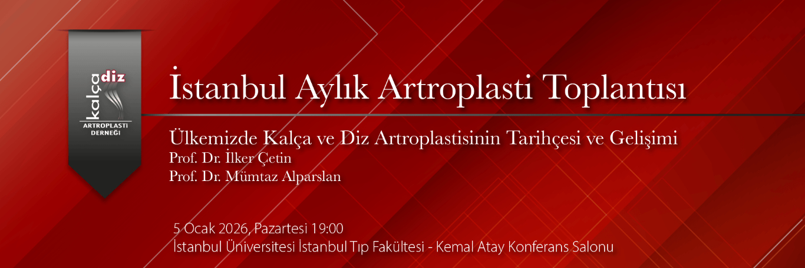

Değerli Meslektaşlarımız,
Yeni bir yıla girerken, yalnızca geleceğe değil; bizlere bu yolu açan ustalarımıza ve mesleki mirasımıza da saygıyla bakıyoruz. Bilginin, emeğin ve vefanın kuşaktan kuşağa aktarılmasının değerini bir kez daha hatırladığımız bu dönemde, anlamlı bir toplantıda bir araya geliyoruz.
2026 yılı ilk İstanbul Aylık Artroplasti Toplantısı 5 Ocak Pazartesi 19.00'da İstanbul Üniversitesi İstanbul Tıp Fakültesi - Kemal Atay Konferans Salonu'nda gerçekleştirilecektir.
Toplantımızda, “Ülkemizde Kalça ve Diz Artroplastisinin Tarihçesi ve Gelişimi” başlığı altında, Türk artroplastisinin öncü isimlerinden Prof. Dr. İlker Çetin ve Prof. Dr. Mümtaz Alparslan’ı ağırlamaktan onur duyacağız. Yarım asrı aşan mesleki yolculuklarında edindikleri bilgi ve tecrübeleri, ülkemizde kalça ve diz artroplastisinin gelişim sürecini şekillendiren tanıklıklarıyla bizlerle paylaşacaklardır. Bu mesleki serüvende kendilerine eşlik etmiş birçok kıymetli hocamızın da katkı sunacağı oturumda, Türkiye’de artroplastinin geçmişi, bugünü ve geleceği ele alınacaktır.
Yeni yılın hepimize sağlık, huzur ve mesleki başarılar getirmesini diler; özellikle genç asistan ve uzman meslektaşlarımız için ilham verici olacağına inandığımız bu anlamlı toplantıya tüm meslektaşlarımızı davet ederiz.
Moderatör:
Prof Dr Remzi TÖZÜN
Program:
18:30 – İkram - yemek
19.00 -19.15 – ‘Ülkemizde Total Kalça Artroplastisinin Gelişimi’
Prof. Dr. İlker ÇETİN
19:15 -19:30 – ‘Ülkemizde Total Diz Artroplastisinin Gelişimi’
Prof. Dr. Mümtaz ALPARSLAN
19:30 -19:45 – Tartışma
19:45 - 20:00 – Vaka Tartışmaları
Not: Tartışılmasını istediğiniz olgular veya sunmak istediğiniz sonuçlar için planlama açısından lütfen toplantı öncesi iletişime geçiniz.
Toplantı için iletişim:
Prof. Dr. Vahit Emre ÖZDEN
vahitemre@gmail.com
Prof. Dr. Cengiz ŞEN
İstanbul Üniversitesi İstanbul Tıp Fakültesi
